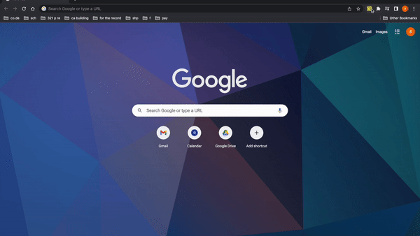
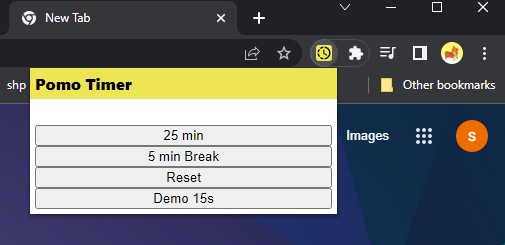
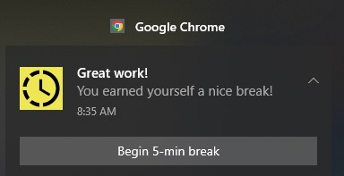

MP1 - Pomo-Timer Browser Extension
Overview and Usage
The Pomo-Timer Browser Extension utilizes the Pomodoro technique to improve the user's focus
on being productive and reduce procrastination by providing a path to a more structured workflow.
My implementation of the Pomodoro technique involves 25 minutes of productivity and 5 minutes of break time!
Here's it in action:

How to use Pomo-Timer:
- Download the code from my repository
- Go to browser extensions menu
(chrome://extensions) to load the extension
- Load unpacked -> select the folder you downloaded
- On the browser nav bar, click to select the puzzle symbol to open a drop down menu for extensions
- Pin the Pomo-Timer extension
- And you're ready to go!
The Development Process
- Looked through Chrome Extension API Docs & examples for inspiration
- Created the Pomo-Timer favicon
- Created appropriate
HTML, CSS, JS, and manifest.json files
- Implemented and tested Chrome API notifications based on examples
- Tested button functionality with Chrome API implementations and repeat steps 4-5!


Issue Deep Dive
The biggest issue I found in this project was getting an understanding of how Chrome APIs work. Even though I found the
documentation of the Chrome API Reference to be elegant to the eye to read, I did not found any examples for the API calls
I wanted to use for my extension. As a result, I resorted to the water-alarm-notification extension example from the many Chrome API examples.
Looking forward
I aim to continuing implementing/improving on the following for this browser extension:
- Implement a countdown timer for the popup
- General content/element organization & design
- Allow customization for times for breaks and work time
- Allow for continuous automatic cycling of the Pomodora technique (right now it only works for 1 cycle)
- Implementing a pause button
Kudos to the following: